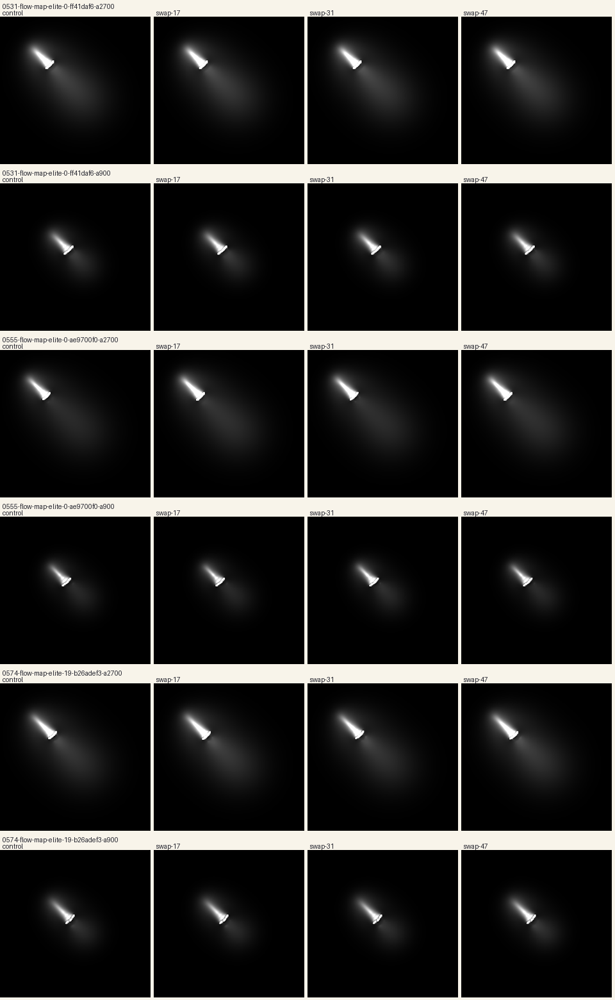

Coherent bodies
in Flow Lenia.
These three specimens retain a coherent leading body through their 3,600-step replays, but have similar silhouettes. Twelve additional Flow Lenia replays have not yet yielded a convincing, distinct replacement.

B26ADEF3
3,600-step native replay. One family, three specimens.

FF41DAF6
3,600-step native replay. One family, three specimens.

AE9700F0
3,600-step native replay. One family, three specimens.
The earlier specimen
The old orbiter develops into filaments during a longer replay. Higher resolution made that change clearer; it did not make it a better body for this purpose.
The earlier Flow Lenia pilot
The original three replays: B26ADEF3 · FF41DAF6 · AE9700F0.
{kind=link}
{kind=link}
{kind=link}
Each of the three earlier Flow Lenia specimens was captured at steps 900 and 2,700. From each checkpoint, an untouched control and three seeded cell-swap trials ran for another 240 steps: 24 trials in total. The command swaps 12% of eligible cells; the fraction of matter affected varies with the state.
All 18 perturbed trials matched their control’s starting-state hash. Cell inventories were preserved, with mass differences below 0.00002% at the intervention. A dominant body remained visible through the recorded continuations; the largest component above the density threshold held at least 82% of all matter, including the diffuse material.
This pilot does not replace the article’s developmental results. It uses a different, visually selected cohort and later ages. The resulting shapes are shown below with one display scale per row.
Inspect all 24 final states

Measured outcomes and receipt hashes ↗ · Plan fixed before intervention ↗
Local review only. This route is excluded from publication.